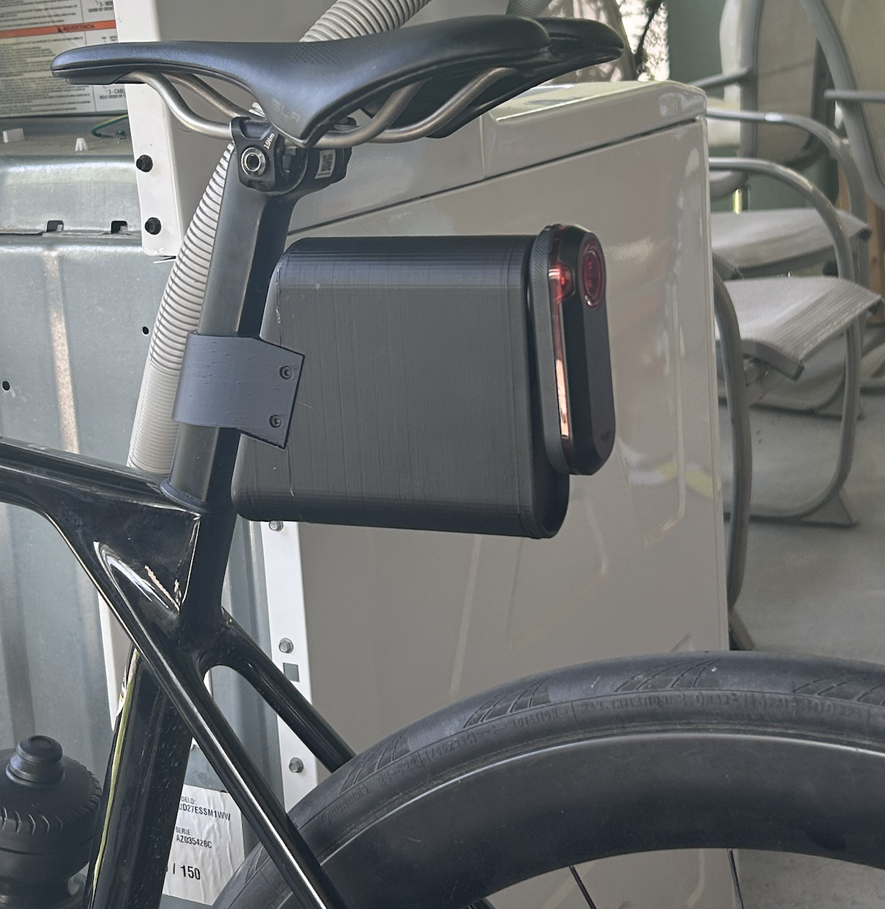
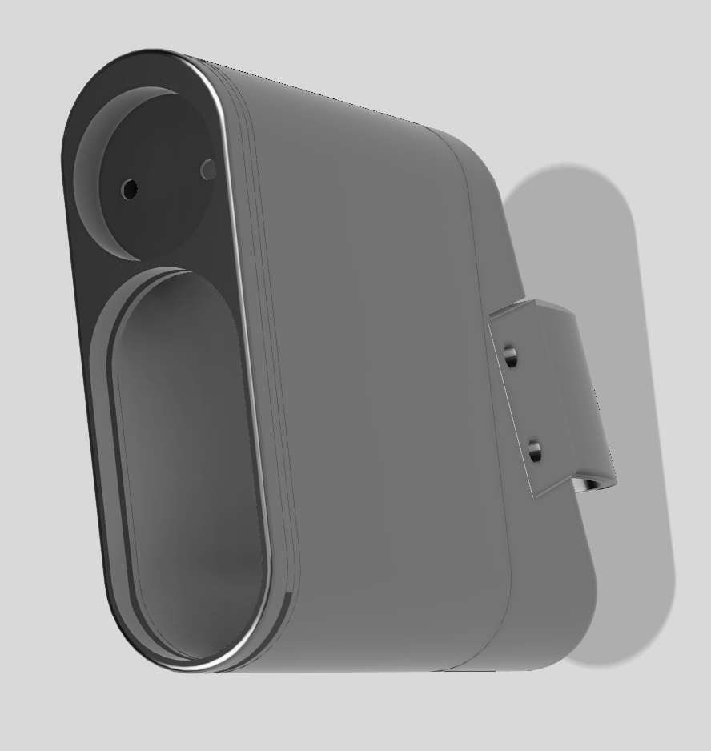
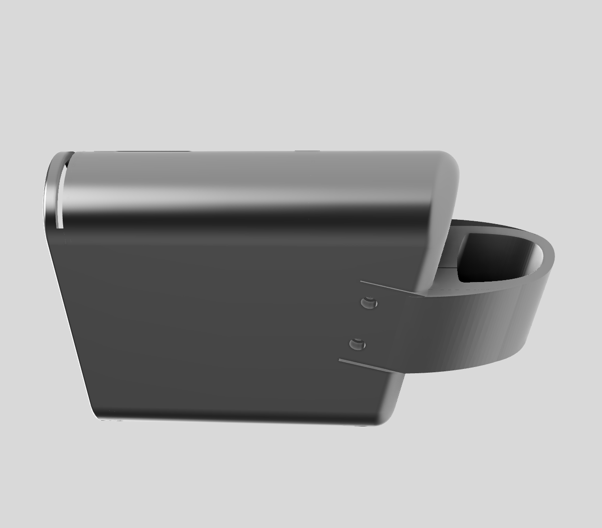
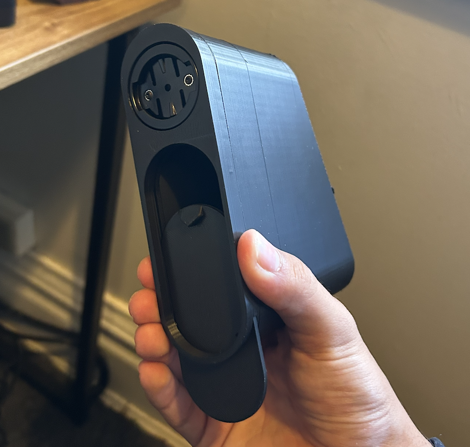
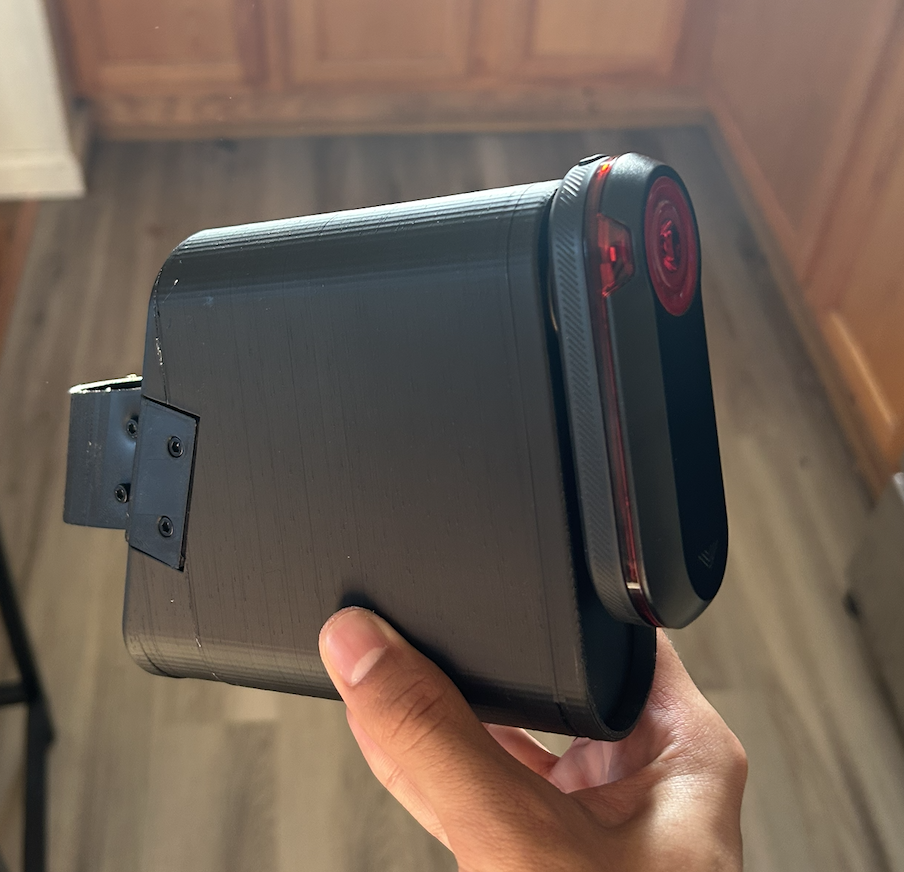

Aerodynamic Saddle Bag Design
Lightweight, aero-conscious saddle bag designed to integrate cleanly with a Canyon Ultimate seatpost.
Parametric CAD
3D Printing
Product Design
Cycling

Objective
Design and fabricate a lightweight, aerodynamic saddle bag that integrates cleanly with a Canyon Ultimate seatpost, minimizes drag, and securely carries essential ride items using a parametric CAD model and a 3D-printed prototype.

Design Requirements
- Minimize frontal and side projected area behind the seatpost.
- Maintain secure mounting under dynamic road vibration.
- Achieve low mass while preserving sufficient stiffness.
- Enable one-handed access to contents.
- Fit common cycling tools.
- Be manufacturable via 3D printing.


Key Design Features
- Streamlined, tapered housing to reduce flow separation behind the saddle.
- Integrated rear light mount aligned within the wake region.
- Custom seatpost clamp geometry for rigid, strap-free attachment.
- Smooth exterior surfaces with controlled fillets to reduce stress concentrations and drag.
Outcomes
- Produced a functional, lightweight saddle bag prototype.
- Achieved a compact, aero-conscious form factor compared to traditional fabric bags.
- Demonstrated secure mounting with no sway during riding.
- Integrated rear lighting without additional mounts or hardware.


Next Steps
- Conduct CFD analysis to quantify drag reduction and evaluate flow separation.
- Refine slicing configuration to reduce stress concentrations and improve print reliability.